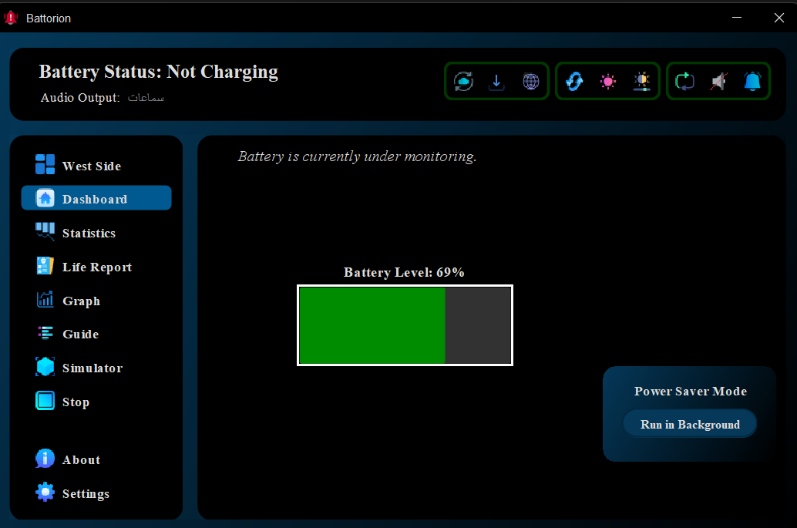

Real-Time Monitoring
Monitor your battery health, charge level, and discharging rate with up-to-the-second accuracy. Battorion operates in the background to ensure you're always informed.
An intelligent tool to keep your device's power usage optimized.
In today’s world, where laptops and portable devices have become essential for work, study, and entertainment, managing battery health and performance is more important than ever. Battorion is designed to provide you with intelligent insights and real-time monitoring that help you maximize your device's battery lifespan and efficiency.
Many users rely on their computers for extended hours, often without paying close attention to battery status or charging habits. Over time, improper charging cycles, overheating, or unnoticed battery drain can lead to reduced battery capacity and unexpected shutdowns. Battorion addresses these issues by offering:
By using Battorion, you protect your investment by prolonging battery life, reduce the risk of sudden power loss, and enhance your overall computing experience. Whether you're a professional, student, gamer, or casual user, Battorion empowers you to take control of your device’s power management like never before.

Discover the smart tools that keep your battery healthy and efficient.